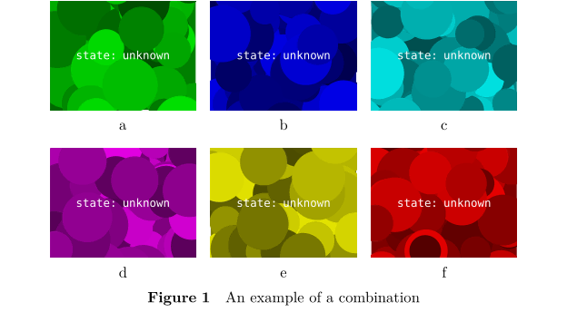
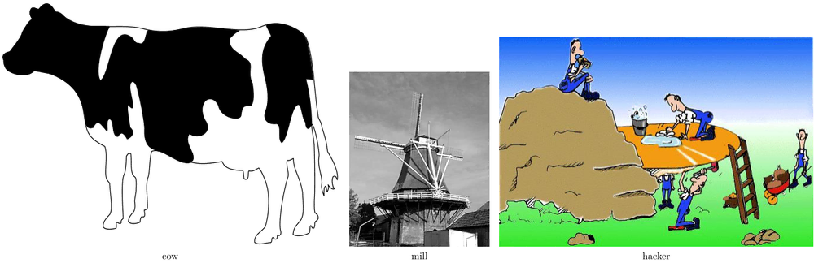
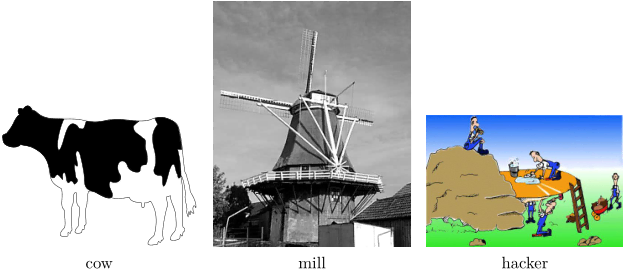
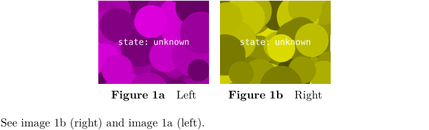

Combinations are ConTeXt's way to align several pictures (preferrably at same size):
Combinations
\startcombination[x*y] %% x=columns, y=rows {something}{caption} ... ... \stopcombination
or using the newer interface:
\startcombination [nx=3, ny=2] %% 3 columns, 2 rows \startcontent something \stopcontent \startcaption caption \stopcaption \startcontent something \stopcontent \startcaption caption \stopcaption \startcontent something \stopcontent \startcaption caption \stopcaption \startcontent something \stopcontent \startcaption caption \stopcaption \startcontent something \stopcontent \startcaption caption \stopcaption \startcontent something \stopcontent \startcaption caption \stopcaption \stopcombination
means:
You define, how much figures in columns * rows you'd like to align.
You must provide one "figure something" (e.g. an \externalfigure) and a caption for every "cell".
The sample, from the manual, shows how to define a caption for the whole group and use it as float (see Floating objects):
-
\useMPlibrary [dum] %% sample images \startplacefigure [title=An example of a combination] \startcombination [nx=3, ny=2] \startcontent \externalfigure [dummy] \stopcontent \startcaption a \stopcaption \startcontent \externalfigure [dummy] \stopcontent \startcaption b \stopcaption \startcontent \externalfigure [dummy] \stopcontent \startcaption c \stopcaption \startcontent \externalfigure [dummy] \stopcontent \startcaption d \stopcaption \startcontent \externalfigure [dummy] \stopcontent \startcaption e \stopcaption \startcontent \externalfigure [dummy] \stopcontent \startcaption f \stopcaption \stopcombination \stopplacefigure
- 
Image Width
The image widths aren’t calculated automatically:
-
\startcombination[3*1] {\externalfigure[cow]}{cow} {\externalfigure[mill]}{mill} {\externalfigure[hacker]}{hacker} \stopcombination
- 
You could define them on your own:
\startcombination[3*1] {\externalfigure[cow] [width=.3\textwidth]}{cow} {\externalfigure[mill] [width=.3\textwidth]}{mill} {\externalfigure[hacker][width=.3\textwidth]}{hacker} \stopcombination
But that’s ugly and tedious. Hans did it for you in grph-inc.mkxl:
\definemeasure[combination][ (\textwidth -\effectiveleftskip -\effectiverightskip -\numexpr\combinationparameter\nx-\plusone\relax\dimexpr\combinationparameter\distance\relax )/\combinationparameter]
So you can say:
\startcombination[3*1] {\externalfigure[cow] [width=\measure{combination}]}{cow} {\externalfigure[mill] [width=\measure{combination}]}{mill} {\externalfigure[hacker][width=\measure{combination}]}{hacker} \stopcombination
But that’s still tedious.
With the power of \defineexternalfigure:
\defineexternalfigure[combination][width=\measure{combination}]
(That’s predefined, no need to copy!)
-
\startcombination[3*1] {\externalfigure[cow] [combination]}{cow} {\externalfigure[mill] [combination]}{mill} {\externalfigure[hacker][combination]}{hacker} \stopcombination
- 
Beautiful. ;)
Floatcombinations
When combination contain floats, the command \startfloatcombination is used. Here an example using float combinations as well as subfloatnumbering that creates subfigures sharing a mutual figure prefix and an individual subfigure designator (e.g. figure 1a), figure 1b, etc.).
-
\useMPlibrary [dum] \startplacefigure [location=none] \startfloatcombination [nx=2] \startplacefigure [title=Left, reference=ref:left, group=one, groupsuffix=a] \externalfigure \stopplacefigure \startplacefigure [title=Right, reference=ref:right, group=one, groupsuffix=b] \externalfigure \stopplacefigure \stopfloatcombination \stopplacefigure See \in{image}[ref:right] (right) and \in{image}[ref:left] (left).
- 
Setup
There is the \setupcombinations command.
Referencing
To reference a subfigure you can provide the subfigure's caption as a second parameter to the \in command.
To reference the subfigure with the caption d you would write:
\in{figure}{d}[fig:combinations]
This would produce something like 'figure 2.4d'. The content of the second parameter simply gets appended to the end of the figure's reference-number, thus the example above would still work even if the caption would be 'd) An awesome subfigure'.
See also
Floating objects, \startfloatcombination, \startsubfloatnumbering